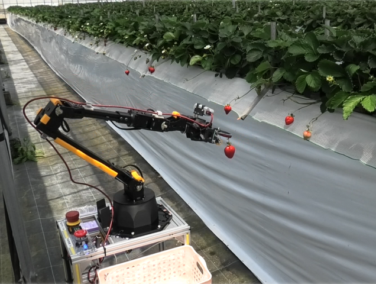

Un robot japonais pour la cueillette des fraises : promesse technologique et défis agricoles
De Olivier Heniel Publié le 20 mai 2025
Le robot de l'OMU montre son efficacité en condition réel. Source : Osaka Metropolitan University
C’est au Japon, l’un des leaders mondiaux de la robotique, que des chercheurs de l’Université Métropolitaine d’Osaka ont dévoilé un nouveau robot cueilleur de fraises. Ce dispositif innovant attire l’attention par sa capacité à récolter les fruits de manière entièrement autonome, avec un minimum d’intervention humaine. Grâce à l’intégration de caméras 3D, d’intelligence artificielle et d’un système de déplacement autonome, le robot est capable de se déplacer dans les serres et d’identifier avec précision les fraises mûres à cueillir.
Doté de deux modes de navigation, il peut soit se rendre vers des emplacements prédéfinis, soit suivre automatiquement les plates-bandes surélevées tout en maintenant une distance constante avec les cultures. Cette navigation de précision est rendue possible par des capteurs LiDAR, qui permettent de générer une cartographie 3D de l’environnement en temps réel. Le robot peut ainsi détecter les obstacles, s’adapter au relief du terrain et ajuster sa trajectoire pour éviter tout dommage aux plantations. Autre atout : il peut fonctionner en continu et être piloté à distance depuis un appareil mobile, ce qui pourrait contribuer à réduire la dépendance à une main-d’œuvre de plus en plus rare dans un secteur particulièrement exigeant.
L’efficacité du système ne se limite pas à la théorie. Le robot a été soumis à des tests rigoureux, en laboratoire comme en conditions réelles. Il a démontré sa capacité à s’adapter à des variations de hauteur des lits de culture et à des terrains irréguliers, confirmant sa robustesse et sa flexibilité dans des environnements agricoles concrets. Un avantage non négligeable dans une filière où chaque irrégularité du sol peut compromettre le bon déroulement des opérations.
Le projet est dirigé par le professeur adjoint Takuya Fujinaga, de la Graduate School of Engineering de l’OMU. Selon lui, cette innovation démontre la faisabilité d’une navigation autonome et adaptable en milieu agricole, notamment dans le cadre complexe des cultures de fraises surélevées – une méthode largement répandue au Japon. Le chercheur envisage déjà d’élargir les capacités du robot à d’autres fonctions, telles que la détection de maladies, la taille des plants, l’irrigation ou encore la fertilisation. Toutefois, ces applications restent pour l’instant au stade expérimental.
Le projet bénéficie du soutien de la fondation Ozawa and Yoshikawa Memorial Electronics Research Foundation. Aucune annonce n’a cependant été faite à ce jour concernant une industrialisation ou un éventuel partenariat avec des acteurs privés. L’engouement suscité par ce robot donne toutefois de l’espoir pour l’avenir de la robotique agroalimentaire – un secteur où l’adoption reste encore marginale, notamment en comparaison avec la robotique industrielle, qui a su s’imposer à grande échelle. Le passage du prototype au produit commercial reste une étape délicate que seule une intégration progressive dans les pratiques agricoles pourra réellement concrétiser.
Un fossé entre prototype et réalité de terrain
Sur le plan technique, la cueillette des fraises représente un défi bien plus complexe qu’il n’y paraît. Le robot doit non seulement détecter les fruits à maturité, mais aussi les saisir avec délicatesse pour éviter de les abîmer. Il doit également évoluer dans des serres ou des champs aux configurations souvent très variables, tout en garantissant un fonctionnement fiable dans des conditions parfois difficiles (poussière, humidité, chaleur…).
Les obstacles économiques sont tout aussi considérables. Le coût d’achat de ce type de technologie reste élevé, ce qui freine son adoption par les petites exploitations. Le retour sur investissement est incertain, d’autant que les périodes de récolte sont saisonnières : le robot risque donc de rester inutilisé une partie importante de l’année. À cela s’ajoutent les besoins en maintenance et en formation, souvent hors de portée des agriculteurs peu familiarisés avec la robotique.
Enfin, les freins structurels ralentissent également la diffusion de ces technologies. Contrairement à l’environnement industriel, largement standardisé, les exploitations agricoles présentent une grande hétérogénéité. Il est donc difficile de concevoir un robot universel capable de s’adapter à toutes les configurations. Par ailleurs, le manque de connectivité dans certaines zones rurales complique l’utilisation de fonctions avancées comme la télésurveillance ou les mises à jour à distance.
En somme, malgré des avancées remarquables, la robotique agricole peine encore à franchir le cap de la commercialisation à grande échelle. Le robot développé à Osaka constitue une avancée prometteuse, mais son avenir dépendra de sa capacité à s’intégrer progressivement dans les pratiques existantes. C’est à cette condition que la robotique agroalimentaire pourra espérer suivre la trajectoire de sa cousine industrielle.